上海交大-DiffCold
DiffCold 讨论的是冷启动物品推荐里一个很具体但长期难处理的问题：新物品没有历史交互，系统只能依赖标题、文本、图片、类目等内容特征，可是推荐主模型真正擅长使用的往往是由用户行为训练出来的 ID embedding。论文的一作 Kangning Zhang 来自 Shanghai Jiao Tong University，合作机构包括 Xiaohongshu Inc.；本文归入推荐算法方向。论文入口：arXiv:2606.12245。代码页方面，论文正文说明实验基于 ColdRec 开源框架实现，但本文 PDF 没有给出 DiffCold 专属项目页或仓库链接，因此这里把“可复现框架可查、专属代码页未在 PDF 中核验”作为当前状态。
1. 背景和问题
冷启动 item recommendation 的核心矛盾不是“没有内容特征”，而是内容特征和行为特征来自两种不同的数据生成机制。一个 warm item 已经在平台里积累了点击、收藏、购买、播放、跳转等用户行为，协同过滤或图推荐模型可以从这些交互里学习到一个 ID embedding。这个 embedding 的含义不是物品标题或图像本身，而是“什么用户在什么上下文里愿意和它发生交互”。一个 cold item 只有内容特征，常见做法是把内容向量投影到 ID embedding 空间，或者用生成模型从内容特征生成一个近似的 ID embedding。论文认为，很多旧方法的问题在于把这两种空间简单看成可一一映射的空间：warm item 位于由行为信号塑造的 behavioral manifold，cold item 位于由内容特征塑造的 semantic manifold。两个流形并不天然同构，强行对齐会让模型在冷物品和暖物品之间产生拉扯。
这种拉扯就是论文反复强调的 seesaw dilemma。直观说，如果模型为了 cold items 更依赖内容特征，那么 warm items 原本从交互里学到的精细行为差异可能被压平；如果模型保持 warm embedding 的表达能力，又可能让 cold embedding 离真实推荐空间很远。Dropout-based 方法会刻意遮蔽部分 ID 信息，迫使模型学习内容到推荐的关联；Generative 方法尝试直接生成 cold ID embedding；Alignment-based 方法试图让内容表征和行为表征对齐。它们都在不同程度上改善 cold 侧，但经常牺牲 warm 侧或整体指标。论文的论点不是这些方法完全无效，而是它们缺少一种能够尊重 warm 行为分布复杂形状的生成过程。
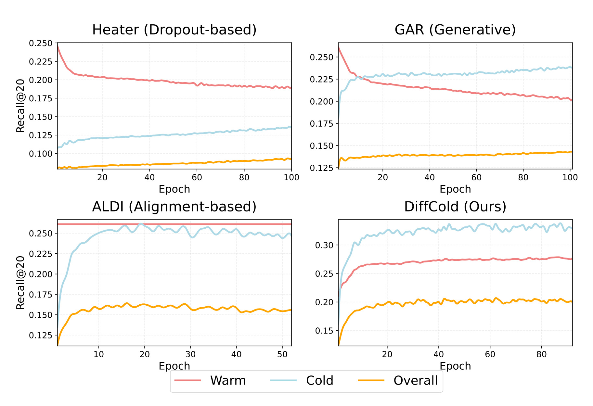
Figure 1 用四个小图把这个现象画得比较直接。Heater、GAR、ALDI 三类代表方法里，Warm、Cold、Overall 三条曲线不能稳定同向提升：有的阶段 cold 侧上升但 warm 侧走低，有的阶段整体曲线被某一侧拖住，有的模型看起来在冷物品上变好，却没有把这个收益传递给整体推荐。DiffCold 的小图则显示三类任务曲线能够更同步地改善。这里要注意，图中不是在比较最终一个点的绝对值，而是在展示训练过程中不同子任务的动态关系；也就是说，seesaw 是一种优化轨迹上的冲突，不只是最终表格里某个指标低一点。对工程系统而言，这很关键，因为线上模型通常不仅关心新物品曝光，也关心已有高价值物品和用户体验是否被破坏。若一次冷启动改造让 warm item 排序质量下降，平台可能会看到短期探索提升但整体点击或留存受损。
从推荐系统角度看，冷启动问题还有一个经常被低估的细节：内容特征本身也不等价于推荐价值。两个商品标题相似，不代表它们的目标用户、价格带、时效性、品牌信任和消费场景都相似；两篇文章主题相近，也不代表读者群体重合。warm embedding 之所以难替代，是因为它把用户行为中隐含的“被谁喜欢、和谁一起被喜欢、在什么序列中被消费”编码进去。论文把这一点称作 behavioral manifold，是为了强调 warm ID 空间不是普通语义空间，而是推荐任务自身塑造出来的空间。冷启动方法如果只把内容向量映射进去，容易生成一个看似有语义但推荐几何位置不可靠的点。
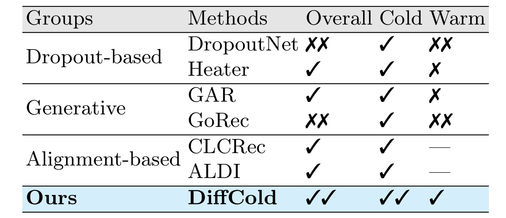
Table 1 是对这个问题的压缩版总结。DropoutNet 和 Heater 属于 dropout-based，表中显示它们可以改善 cold，但 warm 经常下滑；GAR、GoRec 等生成式方法也能把 cold 侧做起来，却未必保持 warm 侧；CLCRec、ALDI 这类 alignment-based 方法避免直接扰动 warm embedding，但整体提升和 cold 提升仍有限。DiffCold 在表里被标成 Overall、Cold、Warm 同时改进。这个表的价值不是提供完整数值，而是帮助读者先建立“旧路线各有偏向”的结构化认识：旧方法往往是用一个固定桥梁把内容特征接到行为空间，而 DiffCold 试图把这个桥梁改成条件扩散生成过程，并且再加两个针对推荐任务的设计，让生成起点和生成分布都更接近 warm item 的行为流形。
这篇论文和近两年推荐算法里常见的“生成式推荐”叙事也有差别。很多生成式推荐工作把生成模型用在序列预测、候选生成、文本化解释或交互增强上，关注的是生成一个 item、一个 token 序列或一个用户未来行为。DiffCold 的生成对象不是可读文本，也不是 item ID 序列，而是 cold item 的 ID embedding。它把扩散模型看成“从噪声或近似起点逐步还原行为 embedding”的工具。这样做的好处是可以留在原有 embedding-based recommender 的打分框架里：warm item 仍使用原本的 ID embedding，cold item 使用生成出来的 embedding，用户打分仍是 user embedding 与 item embedding 的内积。这种设计对现有召回或排序系统更容易接入，因为它不要求把整个推荐链路改成文本生成或多模态生成。
问题的难点因此可以拆成两层。第一层是 starting-point problem：扩散模型常从 Gaussian noise 开始，但推荐 embedding 不是图像像素，纯噪声起点可能破坏 item 个性化信息，尤其 cold item 本来就缺行为信号，若再从无结构噪声开始，denoising 过程会非常依赖模型从内容条件里补全所有信息。第二层是 distribution-consistency problem：训练时可见的是 warm item，真正需要生成的是 cold item；如果只在 warm item 上学 denoising，却不显式约束生成表示和真实 warm embedding 的分布关系，推理阶段生成的 cold embedding 可能仍然落在一个偏离行为流形的区域。DiffCold 的两个核心模块正是分别对应这两层：Retrieval-enhanced Aggregator 解决起点，Simulation-based Representation Alignment 解决分布一致性。
2. 方法
2.1 整体训练与推理框架
DiffCold 的输入可以分成三类：用户 embedding、warm item ID embedding、item content feature。用户和 warm item embedding 先由任意 embedding-based backbone 使用交互数据预训练，论文实验里使用 MF、LightGCN、SimGCL 三个 backbone。对训练 batch 中的三元组 ((u,i,j))，其中 (i) 是用户 (u) 的正样本 warm item，(j) 是负样本，DiffCold 只对正样本 (i) 的 item embedding 做扩散 forward-reverse 训练；负样本仍参与 BPR ranking loss，用于保证生成表示服务推荐排序。这样做使扩散训练不脱离推荐目标：模型不是单纯重构一个向量，而是要生成一个让用户更偏好正样本、低于负样本的推荐向量。
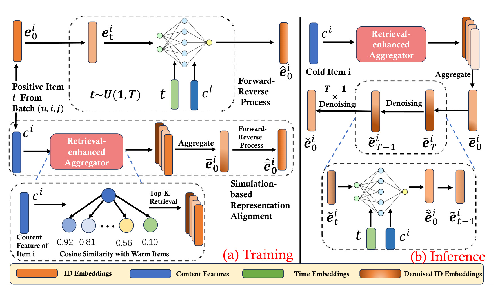
Figure 2 把训练和推理放在同一张图里。左侧训练阶段，正样本 item 的真实 ID embedding (e^i_0) 被加噪到 (e^i_t)，模型在时间步 (t)、内容特征 (c^i) 的条件下预测原始 embedding。与此同时，Retrieval-enhanced Aggregator 先从内容空间检索 top-K 相似 warm items，把它们的 ID embeddings 聚合成一个更有行为结构的起点 (\bar e^i_0)，再通过模拟加噪和去噪得到 (\hat{\bar e}^i_0)，用于和真实 warm embedding 对齐。右侧推理阶段，真正 cold item 没有 (e^i_0)，所以系统先用内容特征检索相似 warm items，得到 (\bar e^i_0)，再从这个起点出发经过 (T) 步 denoising，得到 cold item 的生成 ID embedding (\tilde e^i_0)。图中最重要的信息流是：内容特征不是直接被投影成最终 embedding，而是先用于检索、再作为 denoising 条件、最后通过生成过程进入行为 embedding 空间。
这张图也说明 DiffCold 对扩散模型做了推荐任务定制。标准扩散模型经常从高斯噪声开始，还原图像或文本潜变量；DiffCold 认为 cold item embedding 的起点不应当是完全无结构的噪声，而应当是内容相似 warm items 的行为表示均值。训练阶段也不是只做 diffusion reconstruction，还把 BPR-cold、Sim-Align、BPR-warm、Warm-Aug 一起纳入最终目标。换句话说，DiffCold 不是“把 diffusion 套到推荐上”的最小改动，而是把推荐里的两个事实写进扩散链：第一，内容相似的 warm item 能提供有用起点；第二，生成出来的 cold embedding 必须在分布上像 warm embedding，否则仍会造成 cold/warm 空间断裂。
2.2 Forward-Reverse 扩散重构
论文的扩散训练从 warm item ID embedding 开始，因为 warm item 有真实交互信号，可以作为“行为流形上的样本”。给定 warm item 的原始 ID embedding (e^i_0=e^i)，forward process 按时间步逐渐加入高斯噪声：
符号解释：(e^i_0) 是 item (i) 的真实 warm ID embedding，(e^i_t) 是第 (t) 步加噪后的 embedding，(\beta_t) 是噪声方差调度，(I) 是单位矩阵，(\mathcal{N}) 表示高斯分布。这个公式的作用是把一个行为 embedding 逐步破坏成更接近噪声的表示，让模型学习如何从噪声状态还原它。推荐场景里的含义是：如果一个 cold item 的最终位置应当位于 warm 行为流形附近，那么模型必须学会这个流形上 embedding 被扰动后的恢复规律，而不是只学内容特征到坐标点的静态映射。
为了直接采样任意时间步的 noisy embedding，论文使用重参数化形式：
符号解释：(\alpha_t=1-\beta_t)，(\bar\alpha_t=\prod_{s=1}^{t}\alpha_s)，(\epsilon) 是标准高斯噪声。该式说明第 (t) 步向量是原始 embedding 和噪声的加权组合，(\bar\alpha_t) 越小，噪声成分越大。论文还使用线性 variance noise schedule，并用 (s,\alpha_{\min},\alpha_{\max}) 控制噪声尺度范围。这里的直觉是，推荐 embedding 的维度远低于图像像素，而且每一维不是独立可解释的视觉强度，因此噪声不宜过度破坏个性化信息；后面的实验也会显示扩散步数和调度器对质量、耗时都有影响。
Reverse process 使用内容特征作为条件，预测上一步 embedding：
符号解释：(p_{\theta}) 是参数为 (\theta) 的反向去噪模型，(c^i) 是 item (i) 的内容特征，(\mu_{\theta}) 和 (\Sigma_{\theta}) 是模型给出的均值和协方差。论文利用扩散模型的闭式 posterior，把协方差设成 (\tilde\beta_t I)，并让模型直接预测原始 embedding 的估计 (\hat e^i_0=f_{\theta}(e^i_t,c^i,t))。因此反向均值可写成由 (e^i_t) 和 (\hat e^i_0) 组合的形式：
符号解释：(\hat e^i_0) 是模型从 noisy embedding、内容特征和时间步预测出的原始 ID embedding；前一项把预测的干净表示纳入 posterior mean，后一项保留当前 noisy 状态中的信息。这个重参数化让训练目标从估计每一步噪声，变成直接恢复行为 embedding。对推荐任务来说，这很自然：最终要用于打分的是 (e^i_0) 这样的 item ID representation，而不是某个中间噪声。
重构损失和冷物品排序损失分别是：
符号解释：(L_{\mathrm{recon}}) 要求预测 embedding 接近真实 warm embedding；(L_{\mathrm{bpr\text{-}cold}}) 使用用户向量 (e_u)、预测正样本向量 (\hat e^i_0) 和负样本向量 (e_j) 做 pairwise ranking；(\sigma) 是 sigmoid 函数，(B) 是训练 batch。两者分工不同：重构项保证生成向量位于真实 warm 表示附近，BPR-cold 保证这个向量不仅像 warm embedding，而且在推荐排序里有用。如果只保留重构，模型可能学到平均化的行为向量；如果只保留 ranking，模型可能生成能骗过局部排序但分布不稳定的向量。
2.3 Retrieval-enhanced Aggregator
扩散推理的一个关键选择是起点。标准扩散从高斯噪声走向数据分布，但论文认为 cold item recommendation 不适合完全从 Gaussian noise 开始。原因有二：一是 item embedding 本身承载个性化行为结构，纯噪声会让模型在有限步数内难以恢复细粒度偏好；二是 cold item 虽然没有交互，却有内容特征，内容空间中相似的 warm items 能提供一个更接近行为流形的初始位置。DiffCold 因此在推理前做一次基于内容相似度的 warm item 检索。
相似度和检索集合定义为：
符号解释：(s_{i,j}) 是 item (i) 和 warm item (j) 的内容余弦相似度；(I_w) 是 warm item 集合；(I^i_R) 是 item (i) 的 top-K 相似 warm items；(\bar e^i_0) 是这些 warm item ID embeddings 的均值聚合。这个聚合并不是简单把内容向量均值化，而是用内容相似性去索引已有行为 embedding，再把行为 embedding 聚合成起点。其意义在于把语义空间和行为空间之间的桥梁放在检索步骤里，而不是要求神经网络一次性完成内容到行为的全部映射。
这个设计也有明显的工程可解释性。对于一个新商品，如果它的图文内容接近若干历史商品，那么这些历史商品的用户行为可以作为先验；对于一篇新内容，如果它的主题、标签、文本向量接近若干旧内容，那么旧内容 embedding 的平均位置可能比随机噪声更合理。DiffCold 的 Aggregator 相当于把“相似物品的行为邻域”作为生成起点，再用条件扩散细化。它不要求相似 warm items 与 cold item 完全同质，因为后续 denoising 仍由内容特征 (c^i) 和时间步条件控制；但它避免了从完全无结构状态开始搜索行为流形。
需要注意，mean aggregation 是一个相对朴素的选择。论文没有在方法部分引入 attention、可学习权重或图聚合，而是把重点放在 retrieval start 本身是否有效。这让方法更轻，但也意味着聚合质量依赖内容特征和 top-K 的可靠性。如果内容特征噪声很大，或者 cold item 代表一个平台上前所未有的新类别，检索到的 warm items 可能给出错误先验。论文后面的 starting-point 实验用 Gaussian、Projected Content、Cluster-100、Cluster-500 做对照，主要证明“有 warm 行为邻域的检索起点”比这些更稳定，但并没有穷尽更复杂检索聚合器的可能性。
2.4 Simulation-based Representation Alignment
Retrieval-enhanced Aggregator 解决了起点问题，但还没有完全解决分布一致性。训练时 cold items 不可访问，模型实际是在 warm items 上学习生成过程；如果只拿真实 warm embedding 加噪再重构，模型能学会 warm-to-warm 的 denoising，却不一定能保证“由检索起点生成的向量”也落在 warm 行为分布附近。论文的 Simulation-based Representation Alignment 就是为了解决这个缺口：它在 warm item 上模拟 cold 推理场景，用检索聚合得到 (\bar e^i_0)，再加噪、去噪，最后把生成表示和真实 warm embedding 通过 InfoNCE 对齐。
模拟加噪与预测写作：
符号解释：(\bar e^i_0) 是由相似 warm items 聚合得到的模拟起点；(\bar e^i_t) 是这个起点在时间步 (t) 的 noisy version；(\hat{\bar e}^i_0) 是模型从模拟 noisy embedding、内容特征和时间步恢复出的表示。这里和前面的 (e^i_t) 不同，前者从真实 warm embedding 加噪，后者从检索聚合起点加噪。这个差别很重要，因为推理阶段 cold item 没有真实 (e^i_0)，只能从 (\bar e^i_0) 出发；训练时如果不模拟这个过程，推理分布会和训练分布有偏移。
对齐损失为：
符号解释：(\hat{\bar e}^i_0) 是由模拟起点生成的表示，(e^i) 是同一 warm item 的真实 embedding，(e^j) 是 batch 内其他 item embedding，(\tau) 是 contrastive temperature。这个 InfoNCE 目标把生成表示拉近它对应的真实 warm item，并推离 batch 内其他 item。它不像 MSE 那样只惩罚坐标差异，而是以对比学习方式强化“这个生成向量应该和哪个真实 item 属于同一个行为身份”。这对冷启动推荐很有意义，因为最终排序关心相对位置和邻域结构，不只是欧式距离。
从方法逻辑看，Sim-Align 是 DiffCold 区别于普通 conditional diffusion 的关键之一。普通 conditional diffusion 可以用内容条件重构 warm embedding，但训练集只有 warm item；推理时用 cold content 生成，模型可能输出一个“平均 warm-like”向量。Sim-Align 则在训练阶段构造了更接近 cold inference 的输入路径：不是从真实 (e^i_0) 出发，而是从内容检索得到的 (\bar e^i_0) 出发。这让模型提前适应“检索起点并不等于真实行为 embedding”的误差，并学习如何通过内容条件和去噪把它拉回对应的真实 warm 表示。
2.5 Warm-augment 与最终多任务目标
如果模型只优化 cold 侧，仍然可能破坏 warm item 表示。论文认为，冷物品生成目标会影响用户 embedding 和 warm item embedding 的分布，因此需要 warm-side 约束来保护已有 warm recommendation。Warm-augment Representation Learning 包含两部分：一部分是 warm BPR，继续优化用户对 warm 正负样本的个性化排序；另一部分是 warm augmentation contrastive loss，让用户和偏好的 warm item 在全局分布上对齐。
warm 侧目标可概括为：
符号解释：(L_{\mathrm{bpr\text{-}warm}}) 保留标准个性化排序目标，让用户更接近真实正样本 warm item 而远离负样本；(L_{\mathrm{warm\text{-}aug}}) 用对比学习增强用户和偏好 warm item 的全局一致性。它们承担的是“不要为了 cold 改造而牺牲 warm 排序”的职责。若没有这些项，扩散模型和冷侧 BPR 可能把用户向量或 warm item 向量推向更适合生成 cold 表示的区域，但这个区域未必保持 warm item 的精排能力。
最终目标函数为：
符号解释：(L_{\mathrm{recon}}) 训练 denoiser 重构 warm embedding；(L_{\mathrm{bpr\text{-}cold}}) 保证生成 embedding 能服务冷物品排序；(L_{\mathrm{sim\text{-}align}}) 缩小模拟生成表示和真实 warm 表示的分布差异；(L_{\mathrm{bpr\text{-}warm}}) 保护 warm item 个性化排序；(L_{\mathrm{warm\text{-}aug}}) 进一步对齐用户和 warm item 的偏好结构。超参数 (\alpha_1,\beta_1,\alpha_2,\beta_2) 分别调节冷侧任务、分布对齐和暖侧保护的权重。这个目标函数体现了论文对 seesaw dilemma 的处理方式：不是只提升 cold，也不是只冻结 warm，而是在一个目标里显式分配冷、暖、生成、对齐四类压力。
这个多任务目标也暴露了方法的一个现实风险：它引入了较多 loss 权重。如果权重不稳，系统可能从一个 seesaw 变成另一个 seesaw，例如冷侧 BPR 权重过高导致 warm 侧下降，warm augment 权重过高导致生成 cold embedding 保守化。论文通过 Figure 5 做了权重敏感性实验，显示合理范围内波动不大，但真正上线时仍然需要用业务指标重调。尤其在大规模推荐里，warm item 往往承载主要流量，冷启动目标通常只是整体目标的一部分，因此 (\alpha) 和 (\beta) 的设置要结合冷物品曝光策略、探索预算和类目供给结构。
2.6 冷物品推理与打分
推理阶段只处理 cold items。对每个 cold item (i\in I_c)，系统先用 Eq. (9) 的检索聚合得到起点 (\bar e^i_0)，然后把它加噪到第 (T) 步：
符号解释：(\bar e^i_0) 是内容相似 warm items 的 ID embedding 均值，(\bar e^i_T) 是加入第 (T) 步噪声后的起点状态，(\epsilon) 是高斯噪声。与从纯噪声开始不同，这个初始化仍保留了相似 warm items 的行为先验。随后模型按 (t=T,T-1,\ldots,1) 逐步去噪：
符号解释：(\tilde e^i_t) 是推理时第 (t) 步的 cold item embedding 状态，(\hat{\tilde e}^i_0) 是模型在当前步预测的 clean cold embedding，(\tilde e^i_{t-1}) 是下一轮去噪输入。最终输出 (\tilde e^i_0)，作为 cold item 的 ID embedding。打分时，warm item 使用原 warm embedding (e^i)，cold item 使用生成 embedding (\tilde e^i_0)，用户 (u) 对两类 item 的偏好都可以用内积计算。这样，DiffCold 不需要替换用户塔或 warm item 表示，而是补齐 cold item 的行为空间坐标。
推理流程的优势在于模块边界清楚：content encoder 或内容特征可以沿用已有多模态/文本特征；warm recommender backbone 可以沿用已有 MF、LightGCN、SimGCL 或平台内部 ID 模型；DiffCold 插在 cold item embedding generation 位置。它的代价是每个 cold item 需要做 top-K 检索和 (T) 步 denoising。论文实验默认 (k=10,T=20)，这对离线生成或准实时批处理比较友好，但如果平台需要秒级接入海量新物品，就要考虑生成缓存、按类目增量检索、GPU 批量推理和过期更新策略。换句话说，DiffCold 更像“冷物品入库时生成推荐 embedding”的组件，而不是每次用户请求实时生成所有 cold item 表示的组件。
3. 实验结果
3.1 数据集、评估设置和 baseline
论文在 Movielens、Citeulike、Xing 三个公开数据集上实验，并把 20% items 设为 cold-start items。cold items 的交互再按验证和测试 1:1 切分，其余 80% warm items 的交互按训练、验证、测试 8:1:1 划分。评估指标是 Recall@20 和 NDCG@20。backbone 选择 MF、LightGCN、SimGCL，baseline 覆盖 DropoutNet、Heater、MetaEmb、GAR、GoRec、CLCRec、ALDI、PAD-CLRec。实现基于 ColdRec 框架，embedding 维度为 64，Adam 学习率 0.001，batch size 2048，(l_2) 正则 0.0001，Aggregator 的 (k=10)，扩散步数 (T=20)。
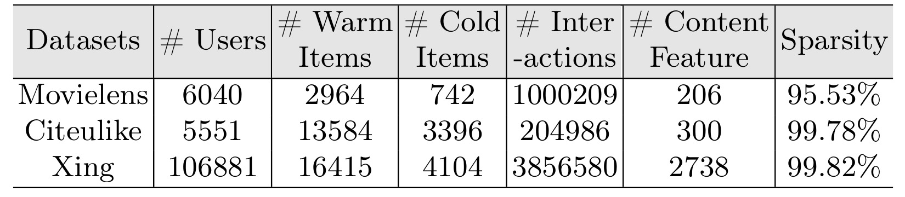
Table 2 说明三个数据集的规模和稀疏性差异很大。Movielens 有 6040 个用户、2964 个 warm items、742 个 cold items、约 100 万交互、206 维内容特征，稀疏率 95.53%；Citeulike 有 5551 个用户、13584 个 warm items、3396 个 cold items、204986 条交互、300 维内容特征，稀疏率 99.78%；Xing 最大，有 106881 个用户、16415 个 warm items、4104 个 cold items、3856580 条交互、2738 维内容特征，稀疏率 99.82%。这组设置覆盖了较稠密的评分/电影场景、非常稀疏的文献收藏场景和大规模求职/职业平台场景。对 DiffCold 来说，这意味着方法要同时面对内容维度差异、交互密度差异和用户规模差异，而不是只在一个低稀疏数据集上展示效果。
实验设置里最重要的公平性点是使用三种 backbone。冷启动方法有时会在弱 backbone 上显得提升大，但换到图模型或对比学习增强的 backbone 后收益消失。DiffCold 在 MF、LightGCN、SimGCL 上都测试，能更好检验它是不是依赖某个初始化模型。另一个关键点是指标同时报告 Overall、Cold、Warm。只报告 cold 很容易掩盖 seesaw；只报告 overall 又可能被 warm item 大量样本支配。三类指标同时出现，才能判断论文声称的“同时改善”是否成立。
3.2 主结果：是否真正缓解 seesaw
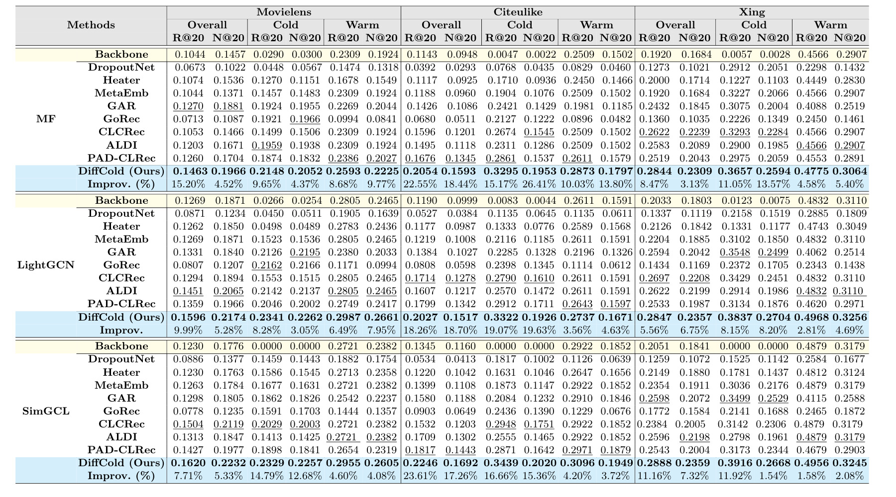
Table 3 是整篇论文最重的实验证据。它在三个数据集、三个 backbone、三个评估子集上列出 Recall@20 和 NDCG@20。几个模式值得单独看。第一，在 MF backbone 上，DiffCold 的 Movielens Overall R@20 为 0.1463，Cold R@20 为 0.2148，Warm R@20 为 0.2593；相对最佳 baseline 的提升分别是 15.20%、9.65%、8.68%。Citeulike 上 Overall R@20 达 0.2054，Cold R@20 达 0.3295，Warm R@20 达 0.2873，提升幅度也覆盖三类指标。Xing 上整体和冷侧提升较小但仍为正，说明在更大规模数据上收益没有消失。
第二，LightGCN 和 SimGCL 的结果验证了方法不是只适合矩阵分解。LightGCN 下 DiffCold 在 Movielens 的 Overall R@20 为 0.1596，Cold R@20 为 0.2341，Warm R@20 为 0.2987；SimGCL 下对应为 0.1620、0.2329、0.2955。Citeulike 的提升尤其明显，SimGCL 下 Overall R@20 相对提升 23.61%，Cold R@20 相对提升 16.66%。这说明即使 backbone 已经有图传播或对比学习增强，cold embedding generation 仍能提供增益。第三，很多 baseline 的表现符合 seesaw 叙事：例如某些生成式方法在 cold R@20 上高于 backbone，但 warm 指标明显低于 backbone；alignment-based 方法对 warm 的破坏较小，却不一定在 cold 或 overall 上最强。
不过，这个表也需要谨慎解读。表中的提升是相对每个数据集/指标下最佳 baseline 计算，不是相对同一方法或同一 backbone 的统一基准；不同数据集的绝对数值不可直接横向比较。Xing 的 cold baseline 中有些方法已经较强，DiffCold 的相对提升没有 Citeulike 那么大，说明方法收益受数据分布和内容特征质量影响。主结果支持“DiffCold 在这些 benchmark 上同时改善三类指标”，但还不能直接推出“任何线上场景都能解决 seesaw”。真正部署时还要看冷物品定义、内容特征覆盖率、召回阶段候选质量、线上探索流量和曝光偏置。
3.3 起点问题：检索初始化是否必要
论文用 Figure 3 专门回答 starting-point problem。对照起点包括 Gaussian Noise、Projected Content Features、Cluster-100、Cluster-500，以及 DiffCold 的 Retrieval-enhanced Aggregator。这个实验非常重要，因为如果 DiffCold 的收益主要来自扩散模型本身，那么任意合理起点都应当差不多；如果收益来自“相似 warm items 的行为先验”，检索聚合起点就应该明显优于噪声、线性投影和聚类中心。
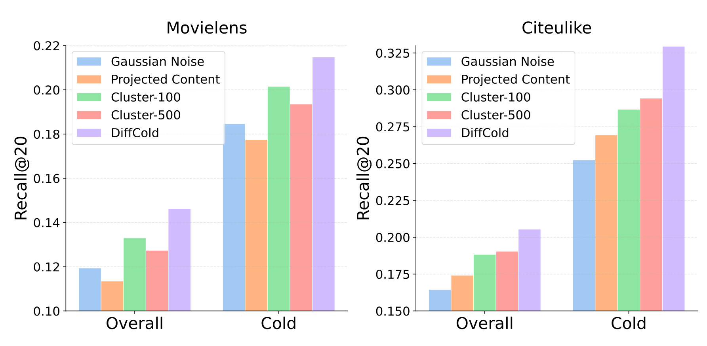
Figure 3 在 Movielens 和 Citeulike 上分别比较 Overall 和 Cold Recall@20。Gaussian Noise 明显最低，说明对推荐 embedding 来说，从纯噪声开始会损失个性化和内容邻域信息。Projected Content 比噪声好一些，但仍然只是把内容特征线性映射到目标维度，不能保证落在 warm 行为流形的合适区域。Cluster-100 和 Cluster-500 通过内容聚类给出更结构化的起点，效果有所改善，但依赖聚类数和数据分布；不同数据集上它们和 DiffCold 的差距不完全一样。DiffCold 的检索起点在两个数据集、Overall 和 Cold 两类指标上都最高，说明 top-K warm item 行为 embedding 的均值比粗粒度聚类或直接内容投影更能保留推荐所需的行为先验。
这个结果也解释了为什么 DiffCold 不把扩散模型当作黑箱生成器。冷启动 item 的主要信息来自内容，但内容最有价值的用法不是直接当作最终表示，而是用于找到“平台历史上哪些 warm items 与它语义相近”。这些 warm items 的 ID embedding 已经包含用户行为结构，把它们作为起点可以减少 denoising 要补全的信息量。对工程落地来说，这意味着内容相似检索索引的质量会成为 DiffCold 的重要前置条件。若内容 encoder 训练不充分，或者 top-K 检索被热门 item、标题模板、类目噪声污染，Aggregator 给出的起点也会受影响。
3.4 分布一致性：量化指标和可视化证据
论文用 Table 4 和 Figure 4 验证 distribution-consistency problem。它采用三个指标：Intra-Cold/Intra-Warm Similarity 计算冷/暖表示内部平均余弦相似度，Wasserstein Distance 衡量把 cold distribution 转成 warm distribution 的最小代价，Maximum Mean Discrepancy 用 kernel 方法衡量分布差异。理想情况不是简单让所有 cold items 聚在一起，而是让 cold 和 warm 都有足够区分度，同时二者分布差异不要过大。
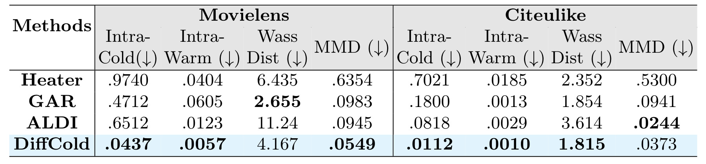
Table 4 中 DiffCold 的 Intra-Cold 和 Intra-Warm 都很低，尤其 Movielens 上 Intra-Cold 为 0.0437，Intra-Warm 为 0.0057；Citeulike 上分别为 0.0112 和 0.0010。低内部相似度意味着 item representations 不是坍缩到一个团里，而是保留了区分度。Wasserstein 和 MMD 方面，DiffCold 在 Citeulike 上 Wass Dist 为 1.815，MMD 为 0.0373，优于或接近最佳；Movielens 上 MMD 为 0.0549，明显低于 Heater 和 GAR。这个表支持论文的两个判断：一是旧方法可能让 cold item 内部过度相似，例如 Heater 的 Movielens Intra-Cold 高达 0.9740；二是 DiffCold 能同时保持区分度和分布接近，不是用牺牲个体差异换取整体对齐。
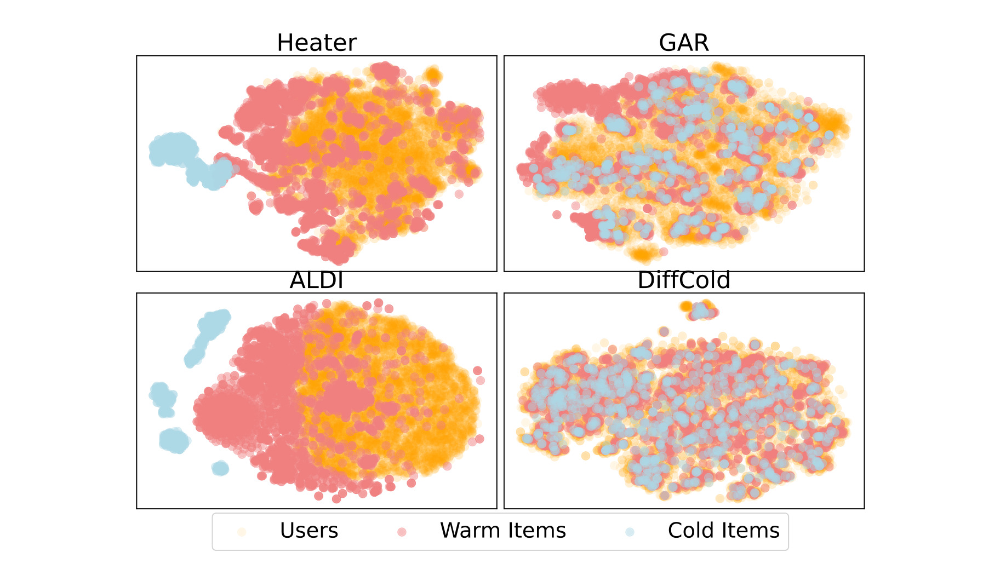
Figure 4 从可视化角度补充 Table 4。Heater 和 ALDI 的 warm/cold item 分布分离更明显，用户点更贴近 warm items，意味着 cold items 可能仍在推荐空间里处于边缘区域。GAR 能缩小部分差异，但图中仍有一些小簇没有被很好整合。DiffCold 的可视化里，users、warm items、cold items 的空间关系更混合，cold items 不再形成一个明显孤立的语义团。读这个图时不要把二维可视化当成严格证据，因为降维会扭曲距离；它的价值是和 Table 4 的量化指标互相印证：DiffCold 不只是提升 Recall/NDCG，还让生成 cold embedding 更像推荐系统已有的行为表示。
分布一致性是这篇论文的方法主线，也是它比普通内容映射更有说服力的地方。许多冷启动方法在 cold 指标上的提升可能来自“把 cold items 映射到热门区域”，但这种做法会降低 item 区分度或伤害长尾。DiffCold 用 Sim-Align 把模拟生成表示和真实 warm embedding 对齐，相当于要求生成向量既要有身份区分，又要处在 warm 行为流形可解释的邻域中。Table 4 和 Figure 4 不能完全证明线上用户行为也会如此，但它们至少说明模型内部表示没有明显出现 cold/warm 两套空间割裂。
3.5 消融：各模块和损失项分别承担什么
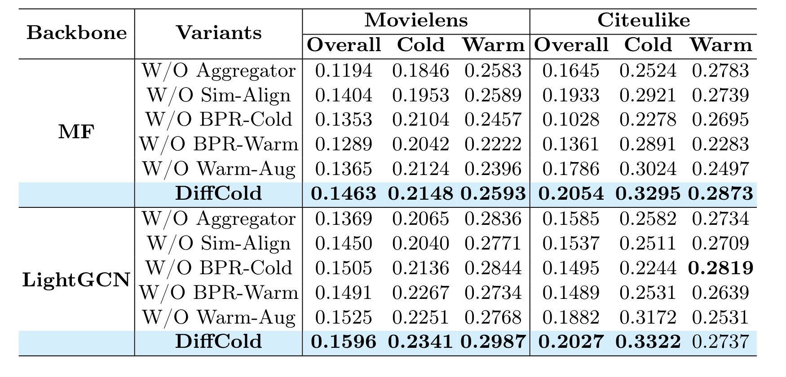
Table 5 展示 MF 和 LightGCN 下的 Recall@20 消融。去掉 Aggregator 后，MF-Movielens Overall 从 0.1463 降到 0.1194，Cold 从 0.2148 降到 0.1846；Citeulike Overall 从 0.2054 降到 0.1645。这是最直接支持检索起点必要性的证据。去掉 Sim-Align 后，MF-Citeulike Overall 降到 0.1933，Cold 降到 0.2921；说明仅有检索起点还不够，仍需要显式分布对齐。去掉 BPR-Cold 对 cold 指标影响也明显，尤其 Citeulike 和 LightGCN 场景，这符合它直接优化生成表示排序能力的定位。
Warm 侧目标的作用则更偏向保护 warm items。去掉 BPR-Warm 或 Warm-Aug 后，warm 指标经常下降，例如 MF-Citeulike 中 W/O BPR-Warm 的 Warm 为 0.2283，低于完整 DiffCold 的 0.2873；W/O Warm-Aug 的 Warm 为 0.2497，也明显下降。这说明最终多任务目标不是随意堆 loss，而是每个组件对应 seesaw 的一个方向。Aggregator 和 BPR-Cold 更偏 cold 侧，Sim-Align 连接冷暖分布，BPR-Warm 和 Warm-Aug 保住 warm 侧。若只看完整模型效果，很难判断到底是扩散、检索、对齐还是 warm-side regularization 在起作用；这张表给出了一种较清晰的模块责任划分。
当然，消融表也透露出模块之间有耦合。某些设置下去掉 BPR-Cold 后 warm 指标不一定下降，甚至局部会接近完整模型；这说明提升 cold 和保护 warm 并不是完全独立的目标，而是在同一个 embedding 空间里相互影响。完整 DiffCold 的优势来自组合，而不是某个单点技巧。工程复现时，如果算力或实现复杂度有限，不能简单认为“只做 Aggregator 就够了”或“只加 Sim-Align 就够了”。Aggregator 是起点，Sim-Align 是分布约束，warm losses 是反向保护；缺一项都会改变模型在 cold/warm 两端的平衡方式。
3.6 超参数、扩散步数和效率
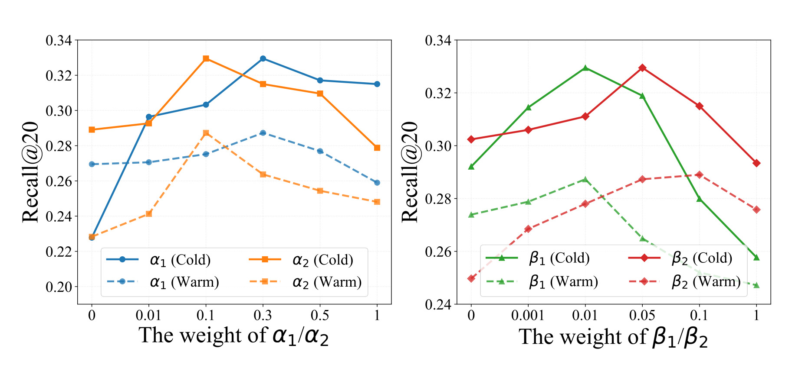
Figure 5 分别考察 (\alpha_1,\alpha_2) 和 (\beta_1,\beta_2) 在 Citeulike-MF 上对 cold/warm Recall@20 的影响。整体趋势是合理区间内曲线波动不大，说明完整目标不依赖一个极窄的权重点。左图里 alpha 组控制 BPR-cold 和 BPR-warm 的权重，右图里 beta 组控制 Sim-Align 和 Warm-Aug 的权重。若权重过小，相关辅助目标不足；若过大，可能压过重构或另一侧目标。论文给出的结论是模型具有一定鲁棒性，但从图上仍能看到不同曲线对权重变化并非完全平坦，尤其 cold/warm 曲线会有不同方向的敏感性。因此实际使用时仍应把这些权重作为业务调参项，而不是直接固定论文默认值。
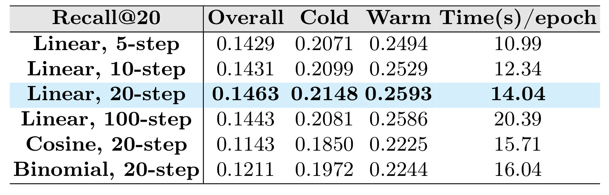
Table 6 讨论扩散步数和 scheduler。Linear 5-step 的 Overall/Cold/Warm 分别为 0.1429、0.2071、0.2494，每轮 10.99 秒；Linear 20-step 提升到 0.1463、0.2148、0.2593，每轮 14.04 秒；Linear 100-step 并没有继续提升 Overall 和 Cold，时间却到 20.39 秒。Cosine 和 Binomial 20-step 在这组设置下明显弱于 Linear 20-step。这个结果说明推荐 embedding 的扩散链并非越长越好：太短可能去噪不足，太长带来额外开销且可能累积偏差；调度器也不能直接照搬图像扩散经验。论文采用 Linear 20-step 是性能和成本折中的结果。
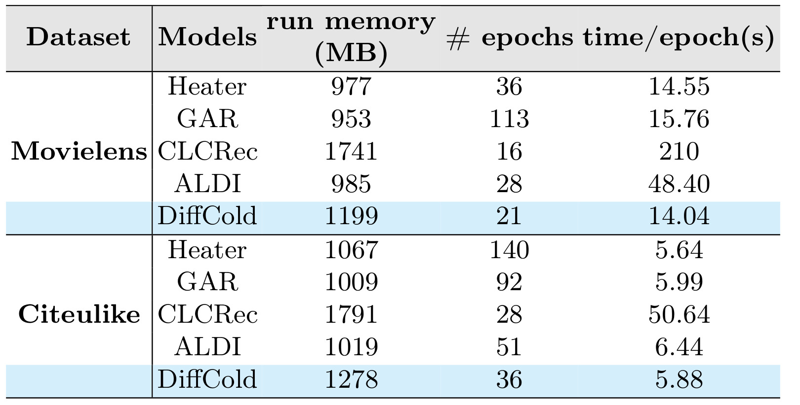
Table 7 比较运行内存、收敛 epoch 和 time/epoch。Movielens 上 DiffCold run memory 为 1199 MB，21 epochs，14.04 秒每 epoch；Heater 为 977 MB、36 epochs、14.55 秒每 epoch；GAR 为 953 MB、113 epochs、15.76 秒每 epoch；CLCRec 虽然 epoch 少但 time/epoch 达 210 秒。Citeulike 上 DiffCold 为 1278 MB、36 epochs、5.88 秒每 epoch，和 Heater/GAR 的每轮时间接近，远低于 CLCRec 的 50.64 秒。这个表支持论文的效率论点：DiffCold 引入扩散生成，但在默认 20-step 和 64 维 embedding 下，计算成本没有达到不可用的程度。
效率结果也需要放在任务形态里理解。论文报告的是训练效率，不等价于线上推理成本；而冷物品 embedding 通常可以离线或准实时生成，生成后存入向量库或特征服务。若平台每天新增物品规模可控，DiffCold 的 per-item denoising 成本可能可以接受；若平台每分钟有大量 UGC 新内容进入候选池，系统就需要批量化、缓存和增量更新策略。另一方面，与一些 alignment 方法相比，DiffCold 的优势在于它不必对所有 warm/cold pair 做复杂全局对齐，检索 top-K 和扩散步数都可控。因此它的工程成本主要集中在内容向量检索质量和冷物品 embedding 生成服务，而不是整个推荐模型重训。
综合实验来看，论文的证据链比较完整：Table 3 证明主指标同时提升，Figure 3 证明检索起点必要，Table 4 和 Figure 4 证明分布一致性，Table 5 证明模块和 loss 的贡献，Figure 5、Table 6、Table 7 证明超参数和效率可接受。相对不足是实验都在公开 benchmark 上，没有线上 A/B；内容特征来源和质量对方法影响很大，但论文没有展开不同 content encoder 的消融；top-K 检索只用均值聚合，也没有比较更强的 learned aggregation。即便如此，作为冷启动 item embedding generation 的论文，它的实验比只报 cold 指标的工作更可信，因为它把 warm 侧损失作为显式验收对象。
4. 总结
4.1 我的判断
DiffCold 的主要价值在于把冷启动 item recommendation 里的“内容到行为”问题重新表述为“条件生成行为 embedding”的问题，并且没有忽略 warm item 质量。它不是简单说 diffusion 比 GAN/VAE 更强，而是指出 cold/warm 两类表示位于不同流形，旧方法强行映射会产生 seesaw。Retrieval-enhanced Aggregator 提供一个来自 warm 行为邻域的起点，Simulation-based Representation Alignment 让从这个起点生成的表示更接近真实 warm distribution，warm-side losses 则避免冷侧优化破坏已有 warm 排序。这个拆解清楚、模块责任明确，是论文最值得借鉴的地方。
我会把它看成一种适合“新物品入库 embedding 补全”的方法，而不是完整推荐系统替代方案。它可以接在已有 user/item embedding backbone 后面，负责给 cold items 生成可参与同一打分空间的 ID embedding。对于内容供给频繁变化的平台，这比重新训练主推荐模型更轻；对于内容特征已经较强的平台，它能把内容相似性转化为行为空间起点。但它依赖 warm item 检索质量和内容向量质量，如果内容特征不稳定、类目跨度很大或用户行为高度依赖时效事件，检索起点可能误导生成过程。
4.2 工程复现要点
复现时我会先固定一个简单 backbone，例如 MF 或 LightGCN，确认 warm item embedding 和 user embedding 训练稳定，再接入 DiffCold。第一步要构建内容向量索引，并离线保存每个 item 的 top-K warm neighbors；第二步实现 forward-reverse diffusion denoiser，输入 noisy item embedding、content feature、time embedding，输出 (\hat e_0)；第三步实现模拟起点路径，确保 Sim-Align 使用的是由检索聚合起点加噪后的表示，而不是误用真实 warm embedding；第四步把五个 loss 的权重分别记录和扫参，尤其观察 cold/warm 两类指标是否出现新的 seesaw。
验证时不能只看 cold item Recall。至少要分 Overall、Cold、Warm 三套指标，并检查 warm 指标是否低于 backbone。还要观察生成 embedding 的几何性质，例如 cold/warm intra similarity、MMD、Wasserstein 或更简单的邻域重合率。如果 cold embedding 大量聚到热门 item 周围，短期 cold Recall 可能好看，但长期会降低多样性和用户体验。工程系统还应记录每个 cold item 的检索邻居，方便排查错误：如果一个新 item 被生成到错误类目，通常要先看内容向量和 top-K neighbors，而不是只调扩散模型。
4.3 局限和后续跟进
第一，论文没有线上实验，公开 benchmark 的冷启动切分不一定等价于真实平台新物品。真实新物品有发布时间、审核、探索流量、创作者冷启动、类目供需等因素，不能只靠 embedding generation 解决。第二，内容特征来源没有充分展开。Movielens、Citeulike、Xing 的内容维度不同，但论文没有比较不同文本/多模态 encoder 对 Aggregator 和 denoising 的影响。第三，top-K 均值聚合简单可靠，却可能在多兴趣、多类目或内容同名异义场景下过粗。第四，loss 权重和扩散步数虽然有敏感性实验，但线上业务目标通常更复杂，需要把冷启动探索、warm item 保量、长尾多样性和转化率一起纳入调参。
后续我会重点跟进三个方向。其一，把 Aggregator 从均值升级为可解释的加权聚合，例如按内容相似度、类目一致性、warm item 行为置信度和时间新鲜度加权，观察是否能进一步降低错误邻居影响。其二，做更细的 cold item 分层评估，把完全新类目、已有类目新物品、热门创作者新内容、长尾创作者新内容分开看，避免平均指标掩盖失败模式。其三，把生成 embedding 的稳定性纳入监控，例如同一 cold item 在内容特征更新后 embedding 漂移多少、top-K neighbor 变化多少、生成向量是否偏向热门簇。只有这些稳定性指标过关，DiffCold 才更像一个可上线的冷启动 embedding 组件，而不只是 benchmark 上的性能改进。